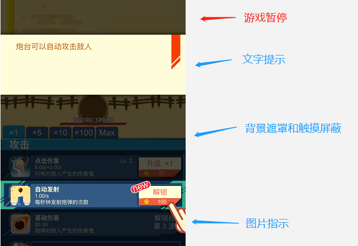
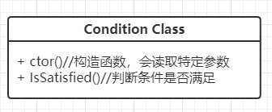
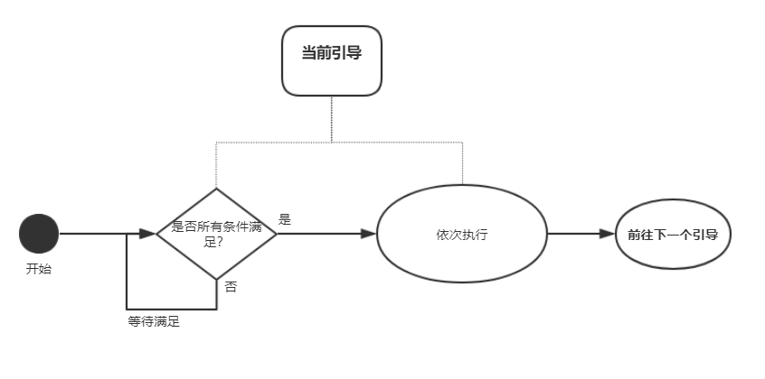

新手引导的一些设计总结–程序角度
前言
新手引导系统是每个游戏都不可或缺的，但是此系统又处于一个很尴尬的位置：
- 涉及到游戏内的很多系统，需要和各个模块交互，不小心设计的话会导致不必要的耦合
- 很多模块需要有一些特殊表现，容易造成代码污染
- 策划侧往往会比较频繁地改动来调整效果，需要可以灵活配置
所以整个新手引导系统的设计既要做到能满足复杂的功能需求，又要能够保持原有模块的设计整洁，还要兼顾策划同学的配置自由度，我们在实现之初定下了“灵活、无副作用”的设计目标。
整个系统由fourthchen架构设计，本人负责了具体细节实现，主要以学习为主。管中窥豹之余，写下这篇文章，希望能够记录下自己对此系统设计的学习和收获。
设计思想
在此系统中，一个完整的引导被这样定义：
引导 = 引导开启条件（conditions） + 引导行为（actions）
- 开启条件（conditions）是触发引导的必要条件，有可能有多个，需要同时满足；
- 引导行为（actions）是引导具体的表现，也可能有多个。多个行为之间相当于同时触发，所以一个引导下的多个行为之间不能插入玩家输入。
拿一个游戏中常见的引导举例，如图：当玩家升到2级之后，引导玩家建设自动炮塔（强制点击某个按钮）。

此引导的开启条件就是“玩家的等级大于等于2级”，引导开启的行为就是1 “图片指示指向解锁按钮” + 2 “黑色背景遮罩其他区域，且屏蔽触摸响应事件” + 3“显示文字提示” + 4“游戏暂停”，当这四个个表现触发完成后，此段引导实际上已经结束。至于玩家是否点击，此次引导中则不关心（大多数情况下玩家点击这个按钮，被设计成了下个引导开启的条件）。
所以整个新手引导系统的核心流程就是：将复杂的新手引导逐步拆解，对每一段小引导，用特定的开启条件（conditions）和行为（actions）来组装，同时多段小引导之前前后拼接，来实现复杂的表现。而且开启条件（conditions）和行为（actions）是可以多次复用的，减少代码重复和风险。
下面举例一些通用的开启条件（conditions）和行为（actions）定义：
开启条件（conditions）
- 人物等级 – 大于等于xx级别
- 完成前置引导 – 保证引导的先后顺序
- 已有xx物品 – 数量满足指定个数
- 事件条件 – 完成特定行为
- 第一次进入xx系统 – 只针对新手
行为（actions）
- UI引导 – 指引玩家点击某个按钮
- 弹出文字图片提示 – 介绍引导详情
- 在场景中指示位置或者路径 – 指引玩家
其中条件4可以详细说一下：游戏中有些行为条件使用频率不高，比如完成某次建造、完成某次放置、完成某次击杀，此时就没必要再抽象出一种特定条件来增加复杂度了。可以使用事件条件，事件ID作为此条件的参数，完成某个行为后发出此ID的事件，同样能够满足条件，这也是一种取舍上的设计。
不同游戏和场景情况不尽相同，按照这个原则，可以自定义出各种可以复用的条件（conditions）和行为（actions），满足复杂的需求。
程序设计
开启条件（conditions）和行为（actions）
典型的工厂模式，将各种自定义的条件和行为加入到两个工厂类里，运行时生成相应实例。


引导类设计

其中每个引导可能包含多个condition和多个action，对于多个conditions时，需要都满足（IsSatisfied()都返回true）；而对于多个actions，则会依次触发（StartTrigger()依次执行）。
程序流程
对于最基本的引导系统，其实整个程序流程还是很清晰的：
最开始的阶段，第一个引导通过初始化得到，初始化的方式可以是服务器下发，也可以是程序预先设定好。
之后就是所有的引导依次进行：conditions不满足就等待，条件满足的时候，执行所有的actions，然后转向下一个引导，默认是之前的引导ID+1，当然也支持配置。如图所示：

其中有一个地方需要解释：在“满足等待”环节，并不是简单粗暴的每帧去检测条件是否满足（当然也不是不行），而是在每个特定的condition中去监听关键事件，在时间到达时才去重新做判断，其余时间闲置等待即可。
eg：对于人物等级条件，比如需要达到5级。如果当前没有达到5级，整个引导处于“等待满足”状态，同时此condition会监听人物等级变化事件，在事件到达的时候，再次检测所有条件是否满足。
其余的一些考虑
尽量使用事件机制
在action和condition中，无论是数据层还是表现层，往往会涉及到别的系统逻辑。
如果想要达到“无副作用”的目的，引导系统是尽量不要去去修改原有逻辑的，它所关心的数据、所引发的表现，都应该是由事件监听和触发的。
引导步骤网络同步
考虑到在引导过程中存在玩家掉线、重连的可能，在关键步骤上是需要向服务器上传已完成的引导ID，等待网络恢复时候，服务器会同步当前的引导，重新初始化即可。
并不需要每一步都同步，几个引导分为一段记录保存即可，恢复时回到最近的引导步骤即可。
策划配表相关
表格的基本设计如下：

需要注意的是，触发条件和引导行为是需要带上特定参数的（比如人物等级条件就需要填写等级参数），参数列表需要自行设计。不同游戏的表格设计不同，这一部分是开放给策划配置的，所以可以设计得更加易用一些。
总结和展望
这样的系统对于简单的新手引导系统已经完全足够，而且如果想要增加更加复杂的步骤，也是完全可行的，同时也符合最开始“灵活、无副作用”的设计预期。
但同时实际使用过程中发现，目前的难点就是由于所有引导的步骤分的太细，如果引导步骤过多，填表过程太过痛苦，同时表格的参数设计也会随着condition和action的增多而增多，也给表格配置增加了难度；可是另一方面，想要实现最大的灵活程度，也确实需要把步骤分得足够详细，两者的平衡需要好好取舍。或许以后能够想到更好的机制来避免这些问题。